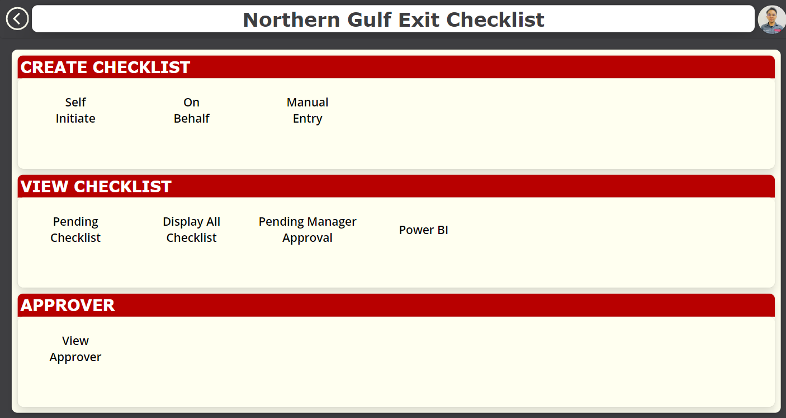
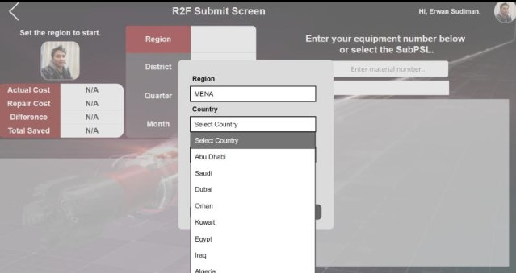
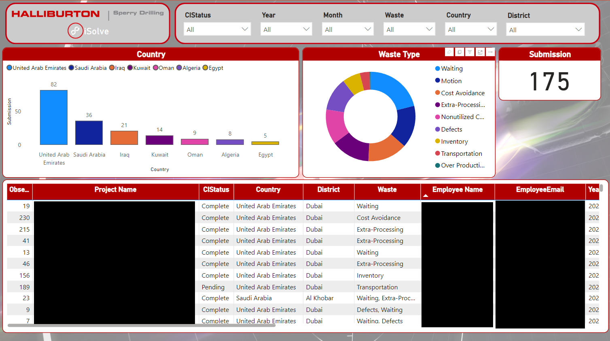

Profile
I started on the tools as an instrument technician and spent the first decade of my career maintaining electrical and mechanical systems in drilling services and logistics. That taught me where enterprise data actually comes from and how messy it is by the time anyone tries to report on it.
Since 2020 I have been building the software instead. My working stack is the Microsoft Power Platform end to end, Power Apps, Power Automate, Dataverse, SharePoint and Power BI, delivered through governed Development, Test and Production environments with role based security. More recently I led a business critical audit application out of low code and into a React and TypeScript codebase running on Dataverse, with unit tests over the business rules and a documented security review.
Alongside that I work on verifiable AI: systems designed so every figure an analytical or AI layer reports can be traced back to the source data it came from. A confident wrong number is worse than no number, and I think that property belongs in the architecture rather than in a prompt.
Career arc
Skills
- Audit lifecycle management
- Approval and escalation workflows
- Evidence and documentation trails
- Corrective action tracking
- Repeat finding detection
- Role based access control
- Recurring obligation tracking
- Development, Test and Production ALM
- Security control gap analysis
- Power Apps canvas
- Power Apps Code Apps
- Power Fx
- Power Automate
- Dataverse
- Power BI
- SharePoint
- Entra ID
- TypeScript
- React
- Node.js
- Python
- Java
- SQL
- Vite
- Vitest
- Git
- REST API design
- Business intelligence
- Predictive analytics
- Supervised learning
- Random forest and regression
- ROC-AUC, F1, precision, recall
- Pearson and Spearman correlation
- AI output verification
- Semantic data modelling
- Drilling services
- Oilfield equipment
- Logistics
- Asset management
- Equipment inspection
- KAIZEN and LEAN
Experience
Technical Specialist
Halliburton, Kuwait
- Designed and delivered a global audit and compliance management platform on Dataverse supporting 50 to 150 management users, with role based security reflecting regional and jurisdictional access requirements.
- Led the migration of a shipped Power Apps canvas application into a React and TypeScript Power Apps Code App on Dataverse, moving a business critical audit workflow out of low code and into maintained, unit tested application code.
- Prepared an enterprise application for formal information security review and authored the control gap analysis, documenting weaknesses and proposed remediations ahead of the session rather than waiting for reviewers to find them.
- Built automated workflows for audit assignment, deadline notification, evidence collection, corrective action tracking and stakeholder approval.
- Owned solution delivery end to end: requirements, architecture, build, testing, controlled deployment and user adoption.
- Worked with global business analysts and regional managers to bridge Repair and Maintenance with Asset Managers, giving real time visibility of available assets.
- Built calibration and checklist monitoring with automatic expiry notification, cutting response time through dashboards and alerts.
- Applied supervised learning, random forest and regression, for prediction based analytics, evaluated with ROC-AUC, recall, precision and F1.
- Maintained and troubleshot Geopilot rotary steerable systems:
- RSS 9600 and RSS 7600 level 2 service: main builder, power unit, bit gamma insert, driver, repeater.
- RSS 5200 level 2 service: main builder, compensator, hydraulic assembly.
Firewatch
Petra Energy Berhad, Malaysia
- Offshore safety role. BOSIET (OPITO certified), Petronas Medical and Offshore Safety Passport.
Technical Lead
Self employed
- Led technical delivery on independent engagements over an eighteen month period.
Electrical and Mechanical Technician III
Halliburton
- Specialised in preventive maintenance across electrical and mechanical systems.
- Lithium battery safety officer covering installation and waste management.
- KAIZEN and LEAN trained, with multiple Maximum Value Performance awards.
Instrument Technician Trainee
Sabah Forest Industries Sdn. Bhd., Malaysia
- Instrument Maintenance Department, maintaining digital and analog transmitters and measuring devices.
- Assembled and disassembled instrument devices for maintenance, prepared daily and working reports.
Selected work
Plant audit application, canvas to code
Power Apps Code App on Dataverse
- Enterprise plant audit application covering the full cycle: automated preparation ahead of the audit date, plant walkthrough, finding capture with photo evidence, repeat finding detection, tiered escalation, corrective action tracking and closure.
- Delivered first as a Power Apps canvas application in Power Fx, then migrated to a React and TypeScript Code App on Dataverse. Fourteen screens, roughly 13,400 lines of application code, nine Dataverse tables.
- Modelled a four level plant hierarchy, region to country to district to plant, with role based access separating auditors, coordinators and managers.
- Consolidated audit scope rules into one shared module after duplicate implementations drifted and produced impossible completion figures.
- Unit tested the pure business logic, scope rules, requirement numbering, role derivation and error translation, with a harness that cannot silently reach production data.
React 19 · TypeScript · Power Apps Code App · Dataverse · Power Fx · Power Automate · Power BI · Vite · Vitest
Verified AI analytics Prototype
TypeScript, semantic layer, SQL
- An analytics architecture in which a language model cannot report an unverified number.
- A plain language question compiles to a constrained semantic query that may only reference governed, pre defined metrics, which then compiles deterministically to parameterised SQL.
- Every figure in the drafted answer is checked against the rows the query actually returned. Figures that cannot be verified are suppressed rather than shown.
- Correctness is a property of the architecture, not an instruction in a system prompt. The design goal is auditability of AI output.
- Current status: core query compilation and verification packages implemented and unit tested. Planner, connectors, UI, auth and persistence are not built.
TypeScript · Node.js · SQL · semantic layer · LLM integration · Vitest
Kuwait NG Exit Checklist
Halliburton
- HR offboarding application replacing a process that ran on manual coordination and paper trails.
- Approval routing resolved automatically against the employee's direct manager through Azure Directory.
- Automated document generation and control through JSON manipulation, producing consistent auditable offboarding records.
- Three initiation routes, self service, on behalf of another employee, and manual entry, feeding one approval queue with a Power BI view for oversight.
Power Apps · Power Automate · Entra ID · JSON

Global Repair To Function
Halliburton
- Inventory application tracking parts repaired back to functional condition, quantifying the cost saved against buying new.
- Approval workflow with automated notification, plus downloadable reporting for analysis.
- Scoped across the MENA region by country, district, quarter and month, with actual cost, repair cost, difference and total saved computed on submission.
Power Apps · Power Automate · Power BI

Continuous Improvement Observation, iSolve
Halliburton, Sperry Drilling
- Platform connecting front line workers and management for real time continuous improvement observations, cutting response time and supporting knowledge sharing across teams.
- Observations classified against the eight LEAN waste categories, waiting, motion, cost avoidance, extra processing, non utilised talent, defects, inventory, transportation and over production.
- Power BI reporting layer over the submissions, filterable by status, year, month, waste type, country and district.
- 175 observations captured across seven countries in the MENA region.
Power Apps · Power Automate · Power BI

Global Asset Redeployment
Halliburton
- Request system letting users submit and comment on assets they need redeployed to their location.
- Automated notification routed to the region or country owner of each tool, shortening the redeployment cycle.
- Embedded in Power BI for real time comparison and asset status visibility.
Power Apps · Power Automate · Power BI
Document Automation
Halliburton
- Simplified the work order and Dozuki documentation process for technicians, reducing documentation error.
- Sorted and compiled documentation for final submission in a single action.
Power Apps · Power Automate · SharePoint
Independent software projects
- Resume Applier. Local first job search and resume tailoring tool with a deterministic, dependency free matching engine and no runtime API requirement.
- Tamu Pintar. Two sided marketplace web application for open air market sellers and visitors in Sabah, Malaysia.
React · TypeScript · Vite · Node.js · Tailwind · Playwright
Education
Master's Degree, Business Intelligence and Analytics (Artificial Intelligence) In progress
Machine learning, data analytics, business intelligence, predictive modelling, statistical analysis
Bachelor of Information Technology with Honours
Open University Malaysia, Faculty of Technology and Applied Sciences
- CGPA 3.79, completed in full while working full time in Kuwait.
- Dean's List in seven semesters: September 2021, January 2022, May 2022, September 2022, May 2023, September 2023 and January 2024.
Diploma of Electronic Engineering
Polytechnic of Kota Kinabalu, Sabah, Malaysia
- Electrical and electronic engineering.
Certification
- Microsoft Power Platform
- Python programming
- Java programming
- HTML and web technologies
- Computational thinking
- BOSIET, OPITO certified
- Petronas Medical
- Offshore Safety Passport, Petronas
- Lithium battery safety officer
- KAIZEN
- LEAN
Contact
- erwan.fadlys@gmail.com
- Kuwait +965 9608 6853
- Malaysia +60 10 8315 362
- linkedin.com/in/erwan-fadly-sudiman